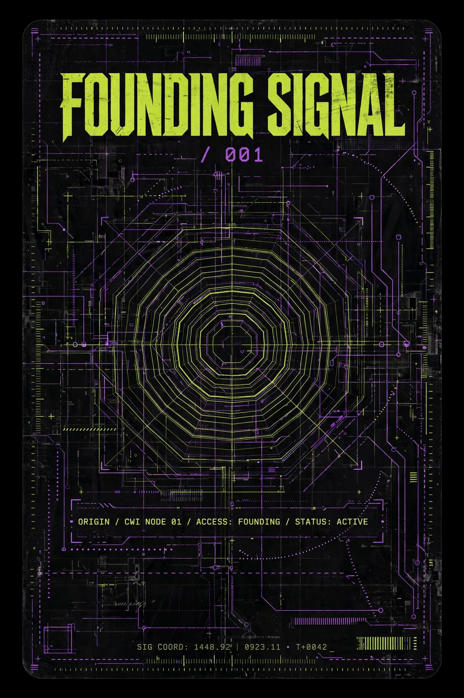
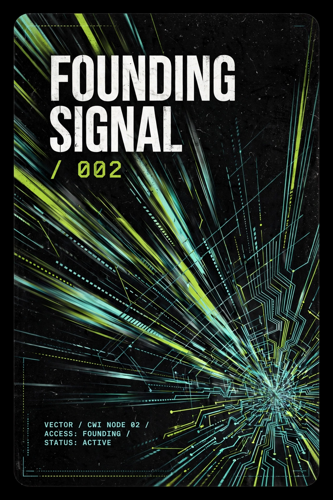
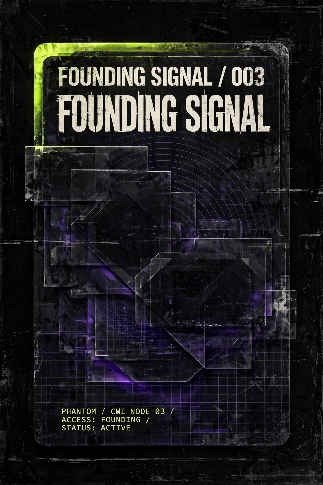
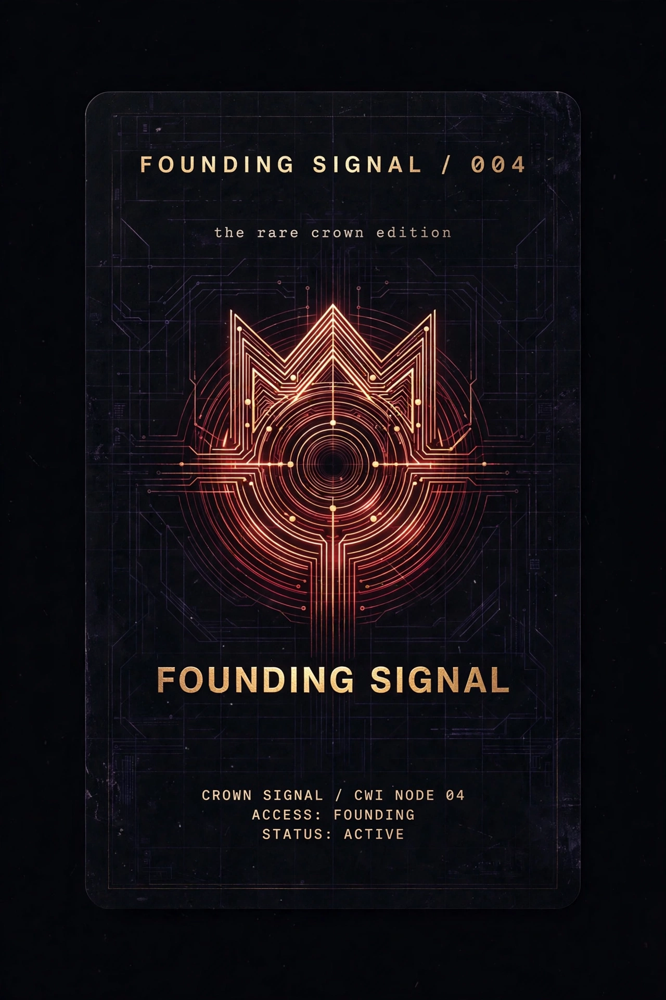

The Logo Protocol
Founding Signal
A utility-first digital membership pilot. Not a speculative collectible — a membership experience with an on-chain receipt. The token makes access portable and collectible; CWI's execution makes it valuable.
Join the waitlist See live demandThe thesis
Membership first, speculation never
The winning product is not "an NFT." It is a CWI membership experience with an on-chain receipt. Ninety-nine passes are enough to test conversion and engagement without creating a large, unsupported supply.
A Founding Signal pass is a numbered digital membership: digital collectibles in a coherent visual system, holder-only briefings and behind-the-scenes company notes, early windows for CWI merchandise, priority programming and selected events, non-binding polls on creative themes and packaging, and community credit on a public CWI community page.
What the buyer does not receive: music master or publishing rights, streaming or licensing royalties, equity, debt, dividends, or profit share, any promise of resale value or appreciation, commercial rights to CWI or artist trademarks, or a guaranteed event, collaboration, or placement.
Plain-language promise: "This is a collectible CWI membership pass. It provides the benefits listed on the official utility page while CWI operates the program. It is not an investment and does not include music, royalty, equity, or intellectual-property rights."
The four classes
88 public passes, 11 CWI reserve (contributors, partnerships, treasury — disclosed before mint). One public pass per wallet during allowlist.

Origin
44Foundational grid. The base signal state.

Vector
30Directional motion. The routed signal.

Phantom
20Hidden layers. The latent signal.

Crown Signal
5Rare color state. The KingCode class — issued with KingCode's identity attached.
Utility calendar
Launch-day utility
- Immediate access to the Founding Signal welcome pack
- First community vote within seven days of mint close
- First private Signal Brief within 14 days
- First digital Studio Drop within 30 days
Ongoing cadence
| Benefit | Cadence | Owner |
|---|---|---|
| Signal Brief | Monthly | CWI Press |
| Studio Drop | Quarterly | CWI Studio |
| Early access | Per release | CWI Marketing |
| Community poll | Monthly | MUSE / Data |
| Office hours | Quarterly | CWI leadership |
| Partner perk | When secured | Business Affairs |
Every benefit has an owner, a cadence, and a fulfillment cost. After mint, a public utility ledger will show each benefit's status, delivery date, evidence link, and next scheduled occurrence. This calendar activates only if the mint happens.
Live demand
Every waitlist signup is a public GitHub issue with the waitlist label. The count below is rendered from that live data — no likes, no impressions, no invented numbers. Audit the raw list →
loading…
Gate status: evaluating… "Qualified" means the member confirmed wallet readiness and utility interest — raw interest counts above; qualification is tallied during validation. The gate stays closed until 75 qualified members are recorded.
FAQ
When is the mint?
There is no mint date. The blueprint's go/no-go rule: minting is authorized only after five gates pass — 75 qualified waitlist members, a fully costed 90-day utility calendar, all visual/brand rights cleared, passing mint/transfer/sale/payout tests, and documented terms, custody, support, and records. If one gate fails, do not mint. Fix it or pause.
What will it cost?
The blueprint sets a target band of US$20–30, converted to KLV immediately before mint. That is a target band, not a final price. The final KLV price is set only after technical preflight, fee review, and Black's approval.
Is this an investment?
No. It is a collectible membership pass: access, participation, and recognition. It carries no music rights, no royalties, no equity, no profit share, and no promise of resale value. Anyone looking for guaranteed returns is not the buyer — and our outreach actively filters them out.
Do the rarer classes get more utility?
No. One contract, one membership promise. Crown Signal is the rarest visual state (5 of 99) and the KingCode class; its rights are identical to Origin.
Which blockchain?
KleverChain is the candidate (native Klever Digital Assets + XPort issuance), pending a complete dry run proving the buyer journey. Nothing is issued until the preflight tests pass.
What are the royalties and limits?
5% creator royalty, zero referral share (marketplace enforcement can vary — disclosed). One public pass per wallet during allowlist. 88 public passes, 11 held in CWI reserve with a documented policy.
Who controls the wallet?
Black alone. Agents prepare assets, metadata, and checklists; only Black connects the wallet and signs any mint, listing, transfer, royalty change, or withdrawal. No private key, seed phrase, or spend authority ever enters an agent workflow.
What happens if the demand gate isn't reached?
The mint waits. The work is preserved and CWI keeps building audience. Weak demand is a documented failure mode — the response is to delay and revise the offer, not to manufacture urgency.
How do I join the waitlist?
Open a waitlist signup issue using the template — it's one click, public, and becomes part of the auditable demand count. No payment, no wallet connection, no obligation.
Ready?
Signal your interest. Publicly. Honestly.
One issue per person. Pick the class that speaks to you — or no preference. Tell us why. We'll count it in the open.
Join the waitlist